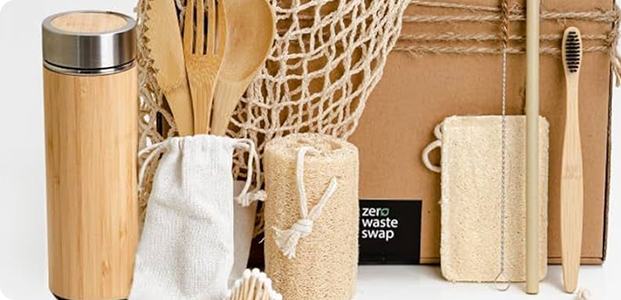

our mission
At Lush & Local, our mission is to make sustainable living
simple, accessible, and beautiful.
We are committed to offering eco-friendly, plastic-free alternatives that are thoughtfully crafted by local artisans across the Philippines. Every product we sell supports mindful consumption, reduces environmental impact, and empowers small communities.
By choosing Lush & Local, you're not just making a purchase — you're making a difference.
We are committed to offering eco-friendly, plastic-free alternatives that are thoughtfully crafted by local artisans across the Philippines. Every product we sell supports mindful consumption, reduces environmental impact, and empowers small communities.
By choosing Lush & Local, you're not just making a purchase — you're making a difference.
featured article
What’s Inside Our Zero Waste Starter Kit?
Date Published: July 5, 2025
Read Time: 3 mins
Unbox a better way of living. Here's a closer look at what comes
in our best-selling Zero Waste Starter Kit and how each item can
help you reduce your daily waste.
